A-PRO의 본사와 R&D센터는 경기도에 있으며, 다양한 제품 포트폴리오를 개발하고 있습니다.최고의 엔지니어들이 새롭고 혁신적인 기술 개발을 위해 끊임 없이 노력하고 있습니다.제품은 여러 국가에서 현지 생산되고 있으며, 본사의 제품과 서비스는 글로벌 해외 영업 네트워크를 통해 판매되고 있습니다.

캐나다 온타리오 미시간(북미법인) 오하이오 테네시 조지아 한국 본사 중국 남경(중국법인) 인도네시아 카라왕(인도네시아법인) 폴란드(유럽법인) 독일